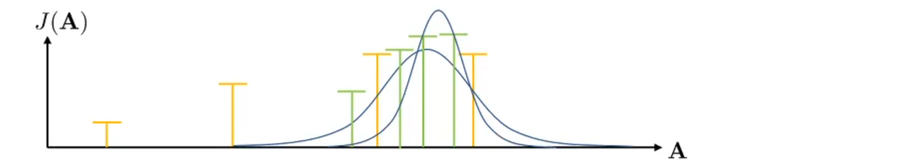
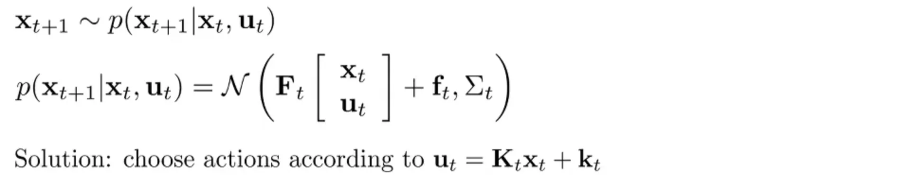

这是强化学习中向 model based 转换的一节内容，使用 known model 做决策。
之前的探讨中我们实际上是不知道 p(st+1∣st,at)，所以我们尝试与环境交互，得到 (st,at,rt,st+1)，利用这些信息更新策略，例如 Q Learning。
但是在以下的情况下我们知道或者容易得到：p(st+1∣st,at)：
我们通常了解动态
- 游戏（例如，雅达利游戏、国际象棋、围棋）
- 易于建模的系统（例如，汽车导航）
- 模拟环境（例如，模拟机器人、电子游戏）
我们通常可以学习动态
- 系统辨识——拟合已知模型的未知参数（机器人学）
- 学习——将通用模型拟合到观察到的转移数据
知道这些 Dynamic 是否让情况变得更好了：是的！
其中，根据动力学转移概率可以细分为确定性的和随机性的。
优化目标：选择一组 a1,…,at 来最大化 reward。如果是随机性的，可以在reward 外面添加一个期望。
a1,…,aT=a1,…,aTargmaxJ(a1,…,aT)A=argAmaxJ(A) close loop：agent 输出一个 action 然后得到新的 state，再根据这个 state选择新的 action, 而 open loop 根据初始 state 给出一系列 action，所以 open loop 更可能给得到一个次优的结果。
Open Loop Planning
针对优化问题，这是一个黑箱方法，即在上方的公式中不考虑 J 具体是什么。简单的思路：step 1. 在一个分布中采样 A1,…,AN；step 2. 基于argmaxiJ(Ai) 选择 Ai 这样的方法简单且计算速度快，但是可能是不太好的选择。
Stochastic optimization
Cross-entropy method（CEM）
不是在分布中随机选取，选择的区域是我们认为的可能存在好的行动的区域，然后不断迭代。如下图：首先采样黄色的样本，然后根据最优的两个样本确定了一个区域，在区域中再次采样，得到绿色的样本。
具体的实施过程如下：

在实践中，CEM 方法非常好，往往能得到最优解。不需要模型具有可微性，可以扩展到离散的空间。通常使用高斯分布；CMA-ES：带有动量的 CEM 方法。
缺点：如果需要采样的维度非常高（例如 30 或 60可能会不好），效果会变差；只适合 Open-loop Planning
MCTS（Monte Carlo Tree Search）
在 AI 引论中讲过这个算法。针对离散的空间，采用蒙特卡洛树搜索。如果简单地构造树，随着时间步的增加，复杂度指数级增长。实践中，我们不能将每个树枝平等地加深，而是采用探索的方式。首先要决定先探索哪条路径。根据在某个节点的 Value，但是这些值不一定是这个动作的准确值而是基于样本的估计。左图中倾向于认为 a2,比 a1好
我们需要记录节点的遍历次数，根据次数决定是否探索的概率（也就是 TreePolicy）。每次更新节点 时需要回传到根节点的子节点。
经过一系列的探索，我们实际上只得到了 s1，的相对最优解。相当于 Alpha Go 通过一系列的搜索得知下一步棋应该如何下。
上图中 Q 是估计值，N 是访问次数，如果访问次数较少，更有可能探索这个子节点，因为它们更有潜力。
Trajectory Optimization with Derivative
在连续情形下可以得到动力学的导数。例如目标为：最小化成本。xt=f(xt−1,ut−1) 为dynamic
u1,…,uTmint=1∑Tc(xt,ut)s.t.xt=f(xt−1,ut−1) 如果想用导数来求解最优化问题，使用链式法则和反向传播，但是实际中一阶方法非常差，可能会有梯度爆炸的问题。所以我们考虑采用二阶梯度。
collocation method(配点法)
在无约束条件下优化动作和状态。对动作和状态同时优化；或仅仅对状态优化，动作由约束条件决定。这里使用的约束方法可以是松弛的，完全精确的，或线性化处理的，针对不同的问题有不同的影响。
u1,…,uT,x1,…,xTmint=1∑Tc(xt,ut)s.t.xt=f(xt−1,ut−1) Linear case：LQR
目标可以迭代地展开为：
u1,…,uTminc(x1,u1)+c(f(x1,u1),u2)+⋯+c(f(f(…)…),uT) f(xt,ut)=Ft[xtut]+ftc(xt,ut)=21[xtut]TCt[xtut]+[xtut]Tct 动力学是线性的，但是成本函数是二次的。
Base case：只求解 uT，由于最后一个动作与之前的 T-1 步的动作无关，优化目标为：
Q(xT,uT)=const+21[xTuT]TCT[xTuT]+[xTuT]TcT 可以化简CT 和 cT:
CT=[CxT,xTCuT,xTCxT,uTCuT,uT]cT=[cxTcuT] 求导后可以得到：然后解得
∇uTQ(xT,uT)=CuT,xTxT+CuT,uTuT+cuTT=0 uT=−CuT,uT−1(CuT,xTxT+cuT) 由于是二次函数，是凸的，所以我们得到了最优解。最优解依赖 xt 的值，所以我们可以设函数K 和 k 来替代 uT。
uT=KTxT+kTKT=−CuT,uT−1CuT,xTkT=−CuT,uT−1cuT 然后 Q 可以化简为：
V(xT)=const+21[xTKTxT+kT]TCT[xTKTxT+kT]+[xTKTxT+kT]TcT V(xT)=const+21xTTVTxT+xTTvT 仍然是一个二次与一个一次，其中：
VT=CxT,xT+CxT,uTKT+KTTCuT,xT+KTTCuT,uTKT vT=cxT+CxT,uTkT+KTTcuT+KTTCuT,uTkT 进一步对 uT−1 和 xT−1，可以把代价表示为当前代价和未来代价：


将最后一项 V(f(xT−1,uT−1)) 使用已知带入得到：

观察到：Q(xT−1,uT−1) 中的所有项都可以写成二次和一次的线性组合，所以我们在形式上化简 Q(xT−1,uT−1)：

之后我们的最优目标只与 T-1 项有关，所以参照之前的步骤再次求导后可以得到：

……一直递归求解……
综上我们的算法流程为 ：不断得到转移方程，保存 K 与 k，直到 x1, 由于已知 x1，我们再次进行前向递归，每次由 x 得到 u，最终得到所有的 u 的数值解。

注意：这里的 Q 和 V 实际上与我们强化学习中的 Q 函数和 V 函数的意义基本一致。
LQR for Stochastic and Nonlinear System
问题建模为：
实际上算法没有改变，添加高斯噪声不会改变 ut 的值，根据对称性可以忽略。
Nonlinear case
面对 非线性系统 时，基于线性近似来反复迭代求解最优控制策略。希望将一个非线性系统局部近似为一个线性二次系统，采用泰勒展开的方式。


这里 δxt=xt−x^t，δut=ut−u^t 使用 LQR 算法得到最优的 δxt，δut，然后得到新的 x 和 u。算法流程为：

每次沿着当前轨迹对系统做一阶线性近似、对代价做二阶近似，然后跑一次 LQR。再用 LQR 输出的控制律在原始的非线性系统中重新 rollout（前向模拟: 使用 δxt=xt−x^t 得到 ut=Kt(xt−x^t)+kt+u^t）。使用新的ut输入真实动力学系统，得到新的 xt；不断迭代直到收敛。
为什么可以收敛？
牛顿法：

ILQR 实际上是牛顿法的近似，ILQR 与牛顿法的最大区别是是否考虑了二阶导数。如果精确考虑了二阶导数就得到了：DDP（微分动态规划）

但是 ILQR 往往不是很好，问题分析：

由于不是二次的，在局部点（蓝色），使用上式会在红色曲线得到最优解，但是这不是蓝色曲线（实际目标）的最优解，这比开始还要差。所以如果使用 LQR 得到的解更差，我们希望回退一点。在改进算法中 forward pass 实现回退。

α 越小，每次移动的幅度越小。实际应用中通过尝试搜索到更好的α。
Application Case
Model Predict Control

每次交互只采用第一个动作。
{kind=link}


{kind=link}